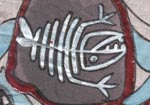
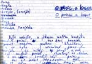

|
retrokruh krvik totr |
|
retrokruh krvik totr |
|
 |
|
1997: Krvik Totr se zaměřili na povídkovou a písňovou tvorbu, vydali intimně osobní album Krví. |
|
O princi a kapce • mp3 Vypravěč:
Bylo nebylo, v jednom malém hrnečku bruslil Princ. Víte, děti,
hrneček patřil malému Jiříkovi Klubíčkovi, a to bylo nesmírné
prase - hrneček si nikdy nemyl, a tak byl na dně pořád škraloup
od kakaa. A na něm bruslil náš Princ. Asi
se ptáte, kde se tam vzal. Tak to vám nepovím. Prostě tam byl a
bruslil. Princ:
Dnes je krásně! Vypravěč:
Ano. V jeho porcelánovém světě bylo krásně. To ale nevěděl,
jaká venku řádí čina. Vlastně ani nevěděl o nějakém venku.
Bruslil si po svém škraloupu a díval se na porcelánovou zeď kolem
sebe, čas od času zdvihl oči k vybledlému stropu, který byl pro něj
oblohou. Někdy spatřil mouchu Marjánku, jak si bzučí z jednoho
kraje oblohy na druhý. Princ:
To je ale krásně! Vypravěč:
Pochvaloval si zase. Ale pak se začaly dít věci. Ozvalo se velké
prásk! a do místnosti vstoupil pláč a křik. Plakal malý Jiřík,
který ze školy přinesl poznámku. Za ním se hnal tatínek, aby mu
naplácal. Mocnou rybičkou ho dostihl, chytil ho za kotníky a praštil
s ním o stůl. Tatínek: Ty hajzle! Vypravěč:
Zakřičel tatínek. Jiříkova
hlavička natropila pěknou neplechu. Tím třísknutím celý stůl
nadskočil, až se Princův hrneček převrátil. - Princ se vykutálel
z hrnečku a zůstal ležet jak dlouhý tak široký v mléčné louži
na stole. Promáčel si svůj dres durch um durch a než se
vzpamatoval, tatínek odebral Jiříka pryč. Princ
si otřel kakaové slzičky a rozhlédl se kolem sebe. Podíval se na
hrneček, ale nepoznal ho. Pohledem přelétl svůj nový svět - tři
nevlídné potemnělé zdi. Jeho oči přitáhla hra blesků za oknem
v jedné ze stěn. Vstal
a chtěl přibruslit blíže, neměl však už pod nohama škraloup -
upadl a propíchl si prdel. Vidlička
pod ním se dala do smíchu. Vidlička:
Ty jsi ale nemehlo! Princ:
Já jsem Princ a ztratil jsem svůj škraloup. Vidlička:
Nebuď smutnej, sundej ty brusle, půjdeme ho spolu hledat. Vypravěč:
Zanedlouho došli k novinám. Vidlička:
Drobků! Drobků! Strejda
Brejle:
Kdo to tady takhle křičí! Vidlička:
Jé, strejdo Brejle, neviděl jsi Drobka? Strejda
Brejle:
No, neviděl. Ale můžeme se po něm podívat. Hele! Támhle spí. Vidlička:
Drobků, vstávej! Drobek: Kolik je hodin... Princ:
Kdo to je? Drobek: Já jsem Drobek. Vidlička:
Drobků, kde má Princ škraloup? Drobek: Nevím. Princ:
Ty jsi debil! Strejda
Brejle:
Tak ho už konečně půjdeme hledat, ne? Vypravěč:
Naši kamarádi ale nenašli vůbec nic. Zpoza cukřenky vyšlo Maso. Maso: Ženu si to domů zkratkou kolem cukřenky a co
nevidím: všichni moji kamarádi tu stojej zaražený jako kůly a
tenhle tady ještě víc, no vypadáte, jako byste hledali škraloup a
já zrovna jeden viděl. No, nekoukejte na mě jako spadlý z nebe a
honem za mnou! Vypravěč:
Venku přestalo pršet a rozjasnilo se. Po prvních nesmělých paprscích
sluníčka sestoupila Kapka a usedla na mateřídoušku za oknem. Princ:
Jé, vidíte to, já jsem se asi zamiloval. Strejda
Brejle:
Do koho jsi se, prosimtě, mohl za takovou chvíli zamilovat? Princ:
Jé, ta je krásná, podívejte, jak se blyští na sluníčku. Strejda
Brejle:
Co to pořád plácáš... Jo támhle - Kapka! Nó, pěkně sis
vybral, řeknu ti, být mladší, tak nevím, nevím... Vypravěč:
Když kamarádi došli na kraj stolu, opřel se vítr do okna a pootevřel
je. Dovnitř vletěl zlomyslný Průvan. Průvan: Chachachá! Strejda
Brejle:
Průvan! Ten nám tu chyběl! Vypravěč:
Princ v zamilovaném omámení volal do okna. Princ:
Kapko! Kapko! Vypravěč:
Kapka jeho něžné volání zaslechla a otočila se na něj. Usmála
se a kamarádi užasli. Všichni (jeden přes
druhého):
Ta je krásná! Drobek: Musíme se dostat k ní. Vidlička:
Strejdo Brejle, dokážeš skočit až na okno? Strejda
Brejle:
No, nevím, zkusím to. - Ááááááááh! (Křup) Maso: Fuj, to je pohled! Pojďte raději postavit můstek. Vypravěč:
Vidlička se chytila kraje stolu. Maso si vylezlo na ni a natáhlo se,
jak nejvíc umělo. Nakonec se přes oba překutálel Drobek, jednou
rukou se chytil Masa a druhou okna. Princ přes ně pohodlně přešel, otočil se a dojatě svým
kamarádům děkoval. Princ: Děkuji ti, Drobku. Děkuji ti, Maso. Děkuji ti,
Vidličko! Maso: Běž už, Princi. Vypravěč:
Princ jim poprvé a naposled zamával a vyhoupl se do pootevřeného
okna. Vidlička:
Hodně štěstí! (Třísk) Drobek: A jéje! Vypravěč:
Nebohý Princ. Jak ten se těšil na Kapčinu náruč. Ale zlomyslný
Průvan přibouchl okno a Princ je na sračičky. Dobrou
noc, děti. © 1997 Bouillon/Faquire |
Z dobového tisku: Na
slovíčko s kostrou Středoevropská legenda Krvik Totr vydala své po staletí očekávané album Krví. Prostřílevše se zástupy nadšených fanoušků, podařilo se nám prodrat až k Pesveterovi Nenovontymu, který se svým davem unášeným kolegou Thomasem von Coutellinym tvoří kostru Krvika. Jelikož se Pesveterovi povedlo schovat se před šílícím zástupem do kanálu, mohl nám věnovat několik desítek hodin svého drahocenného času a poskytnout nejexkluzivnější rozhovor své kariéry. „Pesvetere, vaši skupinu není třeba představovat, ale přesto, mohl byste ji těm několika kulturním analfabetům, kteří ji neznají, přiblížit?“ „Ne.“ „A můžete nám aspoň potvrdlit,...“ „Ano.“ (Potvrdlil.) „Přesto, máte dojem, že vaše nové album stejně jako ta předchozí ovlivní kulturní povědomí celého severovýchodního světa, a prodá se ho aspoň dvacet tři kusů?“ „Ale jó.“ „Přesto, máte rádi Vánoce?“ „Ne.“ „A přesto, nepřijde vám slovo přesto přesto vzrušující?“ „Ano, je stejně vzrušující jako Halík z vedlejšího článku.“ „Díky Bohu.“ |
© 2003 Krvik Totr Limity.